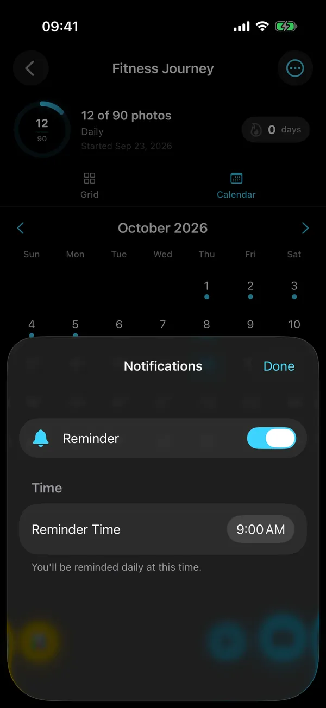
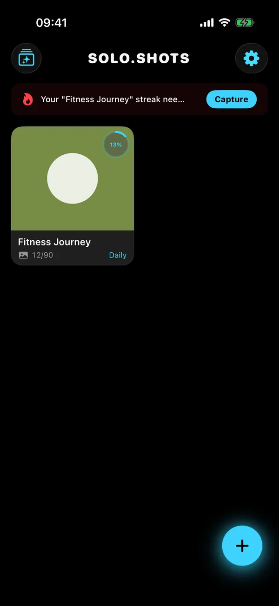
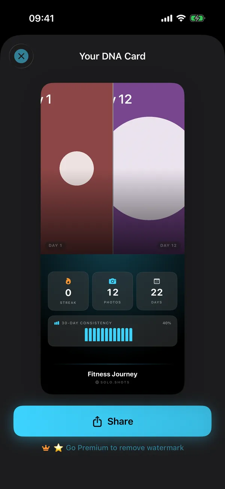

Pregnancy, week by week
One side-on bump photo a week, lined up with last week's, and a video stamped "Week N". Turn on the reminder and it arrives every Monday. Bump photo guide
The progress camera · iPhone & iPad
Solo.Shots is a free progress camera for iPhone and iPad. A see-through ghost of an earlier shot and a tilt-matching level help you line up every photo (same frame, same angle), reminders keep your rhythm, and the series becomes a timelapse, even from photos already in your library.

Scan with your
iPhone camera
Your photos stay on your device, or in your own private iCloud with Premium backup. The free version shows Google AdMob ads.

Made for slow changes
Tell Solo.Shots what you're tracking when you first open it, and it suggests a matching project: the right rhythm and a photo goal. Switch on a reminder at your time, change anything, or start from scratch.
One side-on bump photo a week, lined up with last week's, and a video stamped "Week N". Turn on the reminder and it arrives every Monday. Bump photo guide
Fifty-two weekly photos become one short film. Missed the early months? Make a separate face-aligned timelapse of your child from photos you already took. Bump to baby
Proof of the change the mirror hides: same spot, same pose, same angle, with a body-outline guide.
An honest side-by-side over weeks, with the date on every frame. Made for month-long beard challenges, too. Movember plan
Watch a seedling, a garden or a renovation come together, without a tripod rig.
A record of you, one frame a day. A Lock Screen widget tells you when today's photo is still due.
Kitten to cat, puppy to dog: "My Pet" finds your cat or dog in photos you already have and lines them up. How it works
Art practice, a room makeover, a skincare routine: name it, choose daily, weekly or monthly, and set a goal of 10 to 100 photos.
How it works
You take the photo; Solo.Shots helps you line it up and can remind you when the next one is due. Three steps:
Step 01
Choose a goal or make your own project. Set the rhythm (daily, weekly or monthly), a photo goal and the time you want a reminder.

Step 02
Turn on the Photo Ghost to see a previous photo through the viewfinder, add a shape guide, and match the level. Shooting yourself? Use the 3, 5 or 10-second timer.

Step 03
Every photo lands in a grid and a calendar. When you're ready, make a timelapse in 9:16, 1:1 or 16:9, a poster, or a DNA Card to share.

New in 3.0 · Timelapse from your photos
Yes. Choose Me, Someone Else or My Pet, and Solo.Shots finds them across your photo library, keeps one clear, front-facing photo for each day, week or month, and lines every frame up on the eyes.
Building and previewing is free (with a watermark). Saving the result as a project needs Premium. How it works, step by step
Same frame · Same angle
Keep the same frame and the same angle. Solo.Shots shows a see-through Photo Ghost of a reference photo in the viewfinder, and a level that buzzes when your phone's tilt matches it.

Streaks · Reminders · Widgets
It follows your rhythm. Each project is daily, weekly or monthly, the streak counts in that unit, and a reminder arrives at the time you pick.

Video · Poster · DNA Card
Three things from one habit: a timelapse video, a print-ready poster and a shareable stats card.
Free exports carry a small SOLO.SHOTS watermark; with Premium you can remove it.


Privacy
Private by design: no account, no developer server and no analytics SDK. Your photos are stored on your device (and, with Premium backup, in your own private iCloud). Two honest caveats below.
Open the app and start. There's nothing to register, and no developer server receives your photos or projects.
Photos and project details are stored in the app on your iPhone or iPad. Saving to your Camera Roll is optional.
"Timelapse from your photos" uses Apple's Vision framework on your iPhone. Face data isn't saved or uploaded.
With Premium, iCloud Backup & Sync (on by default, can be switched off) copies projects and photos to your own private iCloud, so they come back on a new device.
The free version shows ads from Google AdMob. If you allow tracking when asked, ads can use your device's advertising identifier; if you don't, they can't. Because of these ads, the App Store privacy label lists data used to track you (location, identifiers, usage data).
Details: Solo.Shots Privacy Policy (updated 15 October 2026).
Free vs Premium
Yes. Solo.Shots is free to download and use, with ads. Premium is an optional monthly subscription that removes ads and limits, and lets you switch off the watermark. See the current price on the App Store.
| Feature | Free | Premium |
|---|---|---|
| Projects | First project free; up to 3 more, each unlocked by a short ad | Unlimited |
| Photos per project | Up to 100 | Unlimited |
| Photo Ghost, guides, level, timer | Included | Included |
| Streaks, reminders, widgets, calendar | Included | Included |
| Timelapse video | 1080p after a short ad; 4K once (a short ad unlocks it, and the export shows one too) | 1080p or 4K, no ads |
| Posters and DNA Card | Included, with watermark | No watermark |
| Timelapse from your photos | Build and preview (watermarked) | Save as a project |
| iCloud Backup & Sync | — | Included |
| Import photos into a project | — | Included |
| RAW (DNG) capture | — | On supported rear cameras |
| Ads | Short ads to unlock extras and exports, plus occasional full-screen ads between screens (never while you're shooting) | None |
Premium ("Solo.Shots Premium Monthly") renews every month until you cancel. Cancel any time in your Apple Account subscriptions; Premium stays active until the end of the period you paid for.
Already subscribed on another device? Settings → Subscription → Restore Purchases.
Facts
Changelog
Source: the 3.0 release notes on the App Store.
Guides
Practical guides from the developer: the spot, the angle, the rhythm, and what to make at the end.
FAQ
Short, straight answers. Something missing? Visit Support or email solostaseraofficial@gmail.com.
Yes. Solo.Shots is free to download and use, with ads. Your first project is free, up to 3 more unlock after a short ad each, and free projects hold up to 100 photos.
Premium is an optional monthly subscription (see the current price on the App Store). It removes ads, lets you remove watermarks and adds unlimited projects and photos, 4K every time and iCloud backup.
Match the speed of the change: daily for fast changes (a beard, seedlings, a 30-day challenge), weekly for bodies and pregnancy, monthly for children and slow projects. Pick one rhythm and keep it.
In Solo.Shots each project is daily, weekly or monthly, and the streak and reminders follow that rhythm.
Keep the distance, height, tilt and light the same every time. Solo.Shots helps with the first three: the Photo Ghost shows your latest or first photo through the viewfinder, a shape guide marks where the subject goes, and the level buzzes when your phone's tilt matches the reference photo.
For similar light, shoot at the same time of day in the same spot.
Yes. In Solo.Shots 3.0, choose Me, Someone Else or My Pet. The app finds them across your photo library, keeps one clear, front-facing photo per day, week or month, and lines every frame up on the eyes, all on your iPhone.
Previewing is free with a watermark; saving the timelapse as a project needs Premium.
Yes, for cats and dogs. My Pet finds your cat or dog in photos you already have and lines them up into a timelapse.
For new photos, any project works: shoot at your pet's eye level and use the Photo Ghost to keep the framing.
Not to the developer: Solo.Shots has no account and no server of its own. Photos stay on your device. If you subscribe to Premium and keep iCloud Backup on, projects and photos are also saved to your own private iCloud.
Library analysis runs on your iPhone with Apple's Vision framework, and nothing is uploaded. The free version shows Google AdMob ads, which can use your advertising identifier only if you allow tracking.
Each project has a rhythm: daily, weekly or monthly. The streak counts days, weeks or months; reminders arrive at your chosen time every day, every Monday, or on the 1st of the month; and milestones celebrate 25, 50, 75 and 100 photos.
Yes. Timelapses export in 1080p or 4K, in 9:16 (Reels, TikTok, Shorts), 1:1 or 16:9, at 0.1 to 1 second per frame, with an optional Date, Day N or Week N stamp.
Free exports are 1080p after a short ad, and you can try 4K once (a short ad unlocks it, and the export shows one too); Premium exports 4K every time with no ads, and you can switch the watermark off.
Yes, it works on iPad. Solo.Shots is one universal app for iPhone and iPad and needs iOS 17.6 or later on iPhone, or iPadOS 17.6 or later on iPad.
To restore, open Settings (the gear on the Home screen) → Subscription → Restore Purchases while signed in with the same Apple Account.
To cancel, go to your Apple Account subscriptions (iPhone Settings → your name → Subscriptions). Premium stays active until the end of the period you paid for.
Nine: English, Turkish, Spanish, German, French, Italian, Russian, Japanese and Arabic. The app follows your device language, and you can switch languages in Settings.
No. Solo.Shots is an iPhone and iPad app by independent developer Gül Eda Aydemir. It isn't related to SOLOSHOT, the robotic camera company.
Made by an independent developer
Solo.Shots is designed, built and supported by Gül Eda Aydemir, an independent iOS developer. When you email, the person who builds the app reads it.
Free on the App Store
Day 1 is the one photo you can't take later. Download Solo.Shots, pick what you're tracking, and let the app remember the rest.
Scan with your
iPhone camera
Also by Gül Eda Aydemir
 Solo.Swipe
Swipe to clean your camera roll in 5-minute daily sessions, and make room for a year of progress shots.
Visit Solo.Swipe →
Solo.Swipe
Swipe to clean your camera roll in 5-minute daily sessions, and make room for a year of progress shots.
Visit Solo.Swipe →
 DUMP
Photo dump & carousel maker that picks your best shots for you.
Visit DUMP →
DUMP
Photo dump & carousel maker that picks your best shots for you.
Visit DUMP →
 Solora
Role-based life planner: pick today's Big 3, keep habits going.
Visit Solora →
Solora
Role-based life planner: pick today's Big 3, keep habits going.
Visit Solora →
 ATHA
Breathing exercises for sleep, stress and focus: calm in one tap.
Visit ATHA →
ATHA
Breathing exercises for sleep, stress and focus: calm in one tap.
Visit ATHA →